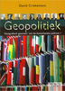

Hoog contrast
Hoog contrast
- Missie en krachtlijnen
van het onderzoek - Overzicht van de opleidingen
- Contactpersonen onderwijs
- Toelatingsexamen
- Informatie voor buitenlandse studenten
- Missie
- Organisatie & leden
- Wie zijn wij?
- Ledenlijst
- Partnerships en samenwerkingen
- Lid worden of partnership aangaan
- Projecten en publicaties
- Welkomstwoord van de decaan
- Organisatie en structuur
- Personeel
- Geschiedenis
- Associatie hogescholen
- Congressen en masterclasses
- UZA
- Doctoraten
- Toelatingsexamen
- Adviescommissie medische ethiek
Contact
Campus Drie EikenUniversiteitsplein 1 2610 Wilrijk (Antwerpen)
Tel: 03/265 26 39
Fax: 03/265 25 01

Publicaties in de kijker
-  Invloedssferen in theorie en praktijk: Hoe geopoitiek nooit is weggeweest in Internationale Spectator, Jg.63:10(2009), p. 488-490 Download
- Invloedssferen in theorie en praktijk: Hoe geopoitiek nooit is weggeweest in Internationale Spectator, Jg.63:10(2009), p. 488-490 Download
- Invloedssferen in theorie en praktijk: Hoe geopoitiek nooit is weggeweest in Internationale Spectator, Jg.63:10(2009), p. 488-490 Download